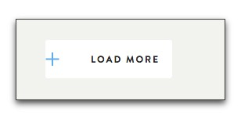
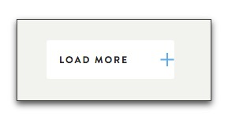

A common use case for this is to place an icon as part of a link or button as seen here:

In this example the code looks like this:
$gap: 40px;
$horizontal_position: 10px;
a.white-button {
@include svg-smart-bg('add--blue', $horizontal_position center, $gap);
}
** Note: There are alot of examples found in the tests directory.**
Explained
add-blueis the filename (without extension)for two files in theimagesdirectory, where the png version is the fallback.images/add-blue.svg images/add-blue.png
The gap
The gap creates space between the edge of the icon and the content of the element; in this case the Load More text. Technically speaking, it applies padding to the element equal to the gap plus the width of the icon.

In this example the code looks like this:
$gap: 40px;
$horizontal_position: 0;
a.white-button {
@include svg-smart-bg('add--blue', $horizontal_position center, $gap);
}
Horizontal position
With a pixel value the location is taken as that many pixels from the left edge of the element. This is default for background position.
To move it to the right side you just need to switch to the four value background positioning of css3 like this:

$gap: 40px;
$horizontal_position: 0;
a.white-button {
@include svg-smart-bg('add--blue', right $horizontal_position center, $gap);
}